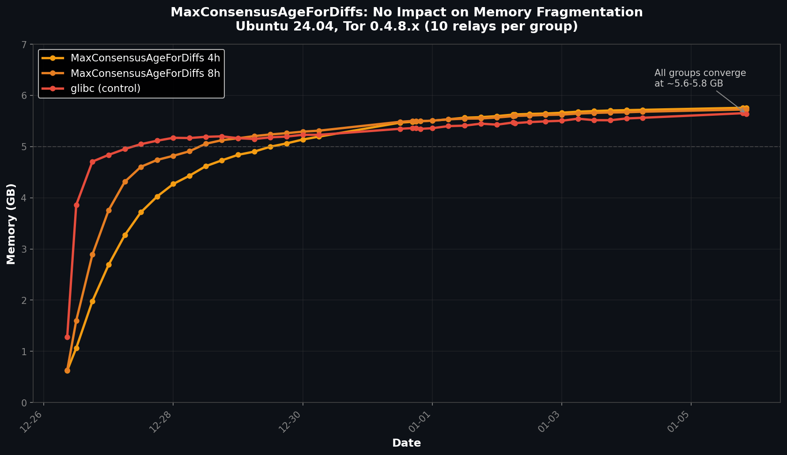

When investigating Tor relay memory fragmentation, we hypothesized that the consensus diff cache might be a major contributor. Tor stores multiple versions of network consensus documents to serve diffs to clients—perhaps limiting how long these are kept would reduce allocation churn?
We tested MaxConsensusAgeForDiffs at 4 hours and 8 hours against the default. The results: no improvement whatsoever.
| Configuration | Avg Memory | vs Control |
|---|---|---|
| MaxConsensusAgeForDiffs 4h | 5.76 GB | +2% (worse) |
| MaxConsensusAgeForDiffs 8h | 5.72 GB | +1% (worse) |
| Control (default) | 5.64 GB | — |
All three groups followed nearly identical fragmentation curves, converging at 5.6–5.8 GB.
The consensus diff cache is only one part of Tor's directory caching. Even with aggressive limits on diff retention, the relay still:
The fundamental problem remains: glibc's allocator fragments memory under this workload pattern, regardless of how long individual cache entries are retained.
This setting isn't useless—it just doesn't solve fragmentation:
Like MaxMemInQueues, this is a configuration knob that controls Tor behavior but doesn't address the underlying allocator problem. For memory fragmentation, the solution is switching to mimalloc or jemalloc—which reduced memory from 5.6 GB to 1.1–1.6 GB in our tests.
📊 Raw data: View experiment data and relay configs on GitHub